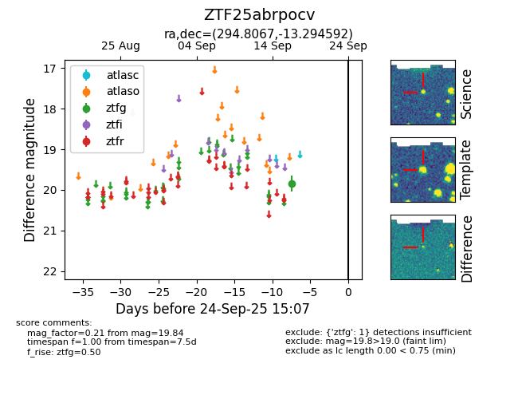

FINK: ZTF25abrpocv
Lasair: ZTF25abrpocv
ALeRCE: ZTF25abrpocv
ZTF25abrpocv (ztf,fink)
equatorial (ra, dec) = (294.8067,-13.29459)
galactic (l, b) = (26.1757,-16.50843)

last ztfg=19.84
1 ztfg detections